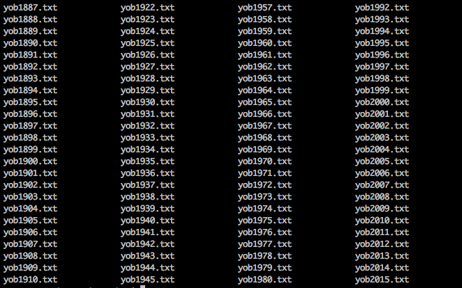

Reproducible Data Analysis in Python
可重用數據分析
Created by Chris Choy
Slides available here: https://github.com/christlc/pycon-hk-2016
Agenda
- What is reproducibility?
- Why is it important?
- Demo
- Makefile to define pipeline
What is reproducibile data analysis?
Data analysis published with data and code.
Why reproducibility is important?
Share your work easily.
Make changes easily.

Then new data comes in...
Hopefully you will agree that reproducibility is useful.
Share your work.
Adapt to changes.
Reflect updates in source data.
Example
What's your name if you are born now?
Demo
Chris (M) in 1980 rank 319.0
| Decade | Name | Rank |
|---|---|---|
| 1980 | Chris | 319 |
| 1990 | Brennan | 319 |
| 2000 | Aden | 319 |
| 2010 | Waylon | 319 |
Top names of the decade 1980
| Name | Gender | Decade | Births | Rank |
|---|---|---|---|---|
| Michael | M | 1980 | 663592 | 1 |
| Christopher | M | 1980 | 554793 | 2 |
| Matthew | M | 1980 | 458894 | 3 |
| Joshua | M | 1980 | 396533 | 4 |
| David | M | 1980 | 383610 | 5 |
| James | M | 1980 | 356362 | 6 |
| Daniel | M | 1980 | 345414 | 7 |
| Robert | M | 1980 | 321598 | 8 |
Rank over time
Rank over time
| Name | Aden | Brennan | Chris | Waylon |
|---|---|---|---|---|
| Decade | ||||
| 1980 | 2724 | 538 | 319 | 644 |
| 1990 | 1736 | 319 | 442 | 1014 |
| 2000 | 319 | 279 | 375 | 648 |
| 2010 | 306 | 316 | 452 | 319 |
Births over time
| Name | Aden | Brennan | Chris | Waylon |
|---|---|---|---|---|
| Decade | ||||
| 1980 | 184 | 2719 | 6477 | 1944 |
| 1990 | 529 | 8299 | 5133 | 1206 |
| 2000 | 9638 | 11738 | 7646 | 3339 |
| 2010 | 5622 | 5195 | 3100 | 5112 |
Lets get started - Plan
Download data
Data wrangling
Generate result
Create visualization
Making it reproducible
US Baby Name
Download Data
# download.sh
mkdir -p data
wget -P data https://www.ssa.gov/oact/babynames/names.zip
cd data && unzip names.zip
One file for each year
Data format
Emma,F,20355
Olivia,F,19553
Sophia,F,17327
Ava,F,16286
Isabella,F,15504
Mia,F,14820
Abigail,F,12311
Emily,F,11727
Charlotte,F,11332
Harper,F,10241
Lets use Pandas to join the files together
| Name | Gender | Births | Year | |
|---|---|---|---|---|
| 0 | Mary | F | 7065 | 1880 |
| 1 | Anna | F | 2604 | 1880 |
| 2 | Emma | F | 2003 | 1880 |
| 3 | Elizabeth | F | 1939 | 1880 |
| 4 | Minnie | F | 1746 | 1880 |
Read the files and add the Year column
# clean_data.py
import pandas as pd
years = range(1880,2015)
print("Reading data")
def read_one_year(year):
path = 'data/yob%d.txt' % year
one_year_data = pd.read_csv(path,
names=['Name','Gender','Births'])
one_year_data['Year'] = year
return one_year_data
names_data = pd.concat([read_one_year(year) for year in years])
Group by decades and rank with Pandas
| Name | Gender | Decade | Births | Rank | |
|---|---|---|---|---|---|
| 0 | Aaban | M | 2000 | 11 | 17467 |
| 1 | Aaban | M | 2010 | 61 | 6633 |
| 2 | Aabha | F | 2010 | 21 | 16513 |
| 3 | Aabid | M | 2000 | 5 | 21065 |
| 4 | Aabriella | F | 2000 | 5 | 30672 |
clean_data.py (continue)
print("Generating summary by decade")
def convert_year_to_decade(year):
return '%i0s' % np.floor(year/10)
names_data['Decade'] = names_data['Year'].apply(convert_year_to_decade)
names_by_decade = names_data.groupby(['Name', 'Gender', 'Decade'])['Births'].sum().reset_index()
names_by_decade['Rank'] = names_by_decade.groupby(['Gender','Decade'])['Births'].rank(method='first',
ascending=False
)
names_by_decade.to_csv('data/names_by_decade.csv')
Generate summary
The rank of this name is 319.0.
| Decade | Name | Rank |
|---|---|---|
| 1980 | Chris | 319 |
| 1990 | Brennan | 319 |
| 2000 | Aden | 319 |
| 2010 | Waylon | 319 |
Generate Summary
gender_filter='M'
decade_filter=1980
target_name='Chris'
df = pd.read_csv('./data/names_by_decade.csv')
rank = \
df['Rank'][(df['Gender']==gender_filter) &
(df['Name']==target_name) &
(df['Decade']==decade_filter)].iloc[0]
names_list = \
df[(df['Gender']==gender_filter) &
(df['Rank']==rank)].Name
(rank,
names_by_decade[names_by_decade.Name.isin(names_list)])
How do we put the tables in the reports?
This title is inserted by Jinja2 template.
<section>
<h3>{{ title_variable }}</h3>
</section>
template = env.get_template('content.j2')
parsed_result = template.render(
{'title_variable': 'This title is inserted by Jinja2 template.'}
)
Result Table
The rank of this name is {{ rank }}.
{{ result_table }}
rank, df = get_result(gender_filter='M',
decade_filter='1980s',
target_name='Chris')
template.render(
{'rank': rank,
'result_table': df.to_html()}
)
The rank of this name is 319.0.
| Decade | Name | Rank |
|---|---|---|
| 1980 | Chris | 319 |
| 1990 | Brennan | 319 |
| 2000 | Aden | 319 |
| 2010 | Waylon | 319 |
Bokeh plot
from bokeh.charts import Line, save, output_file, ColumnDataSource
output_file("output/plot.html")
tooltips = [(c, '@' + c) for c in df.columns]
p = Line(df, x='Decade', y='Rank',
title="Rank across Time", color='Name',
xlabel="Decade", ylabel="Rank",
tooltips=tooltips)
p.circle('Decade', 'Rank',
color='gray', alpha=0.5, source=ColumnDataSource(df))
save(p)
Link it all in a pipeline
By running the following command
./download.sh
python clean_data.py
python compile_report.py
We don't want to download the data every time!
Makefile
data/yob*.csv:
./download.sh
names_by_decade.csv: data/yob*.csv clean_data.py
python clean_data.py
output/presentation.html: compile_reports.py data/names_by_decade.csv templates/*.j2
python compile_reports.py
Just call:
make output/presentation.html
Why Makefile?
1. Manage dependencies.
2. Rerun only when files are changed.
Demo (if there's time)
Packages
GNU Make for data pipeline
Pandas for data manipulation
Bokeh for plots
Jinja2 for templating